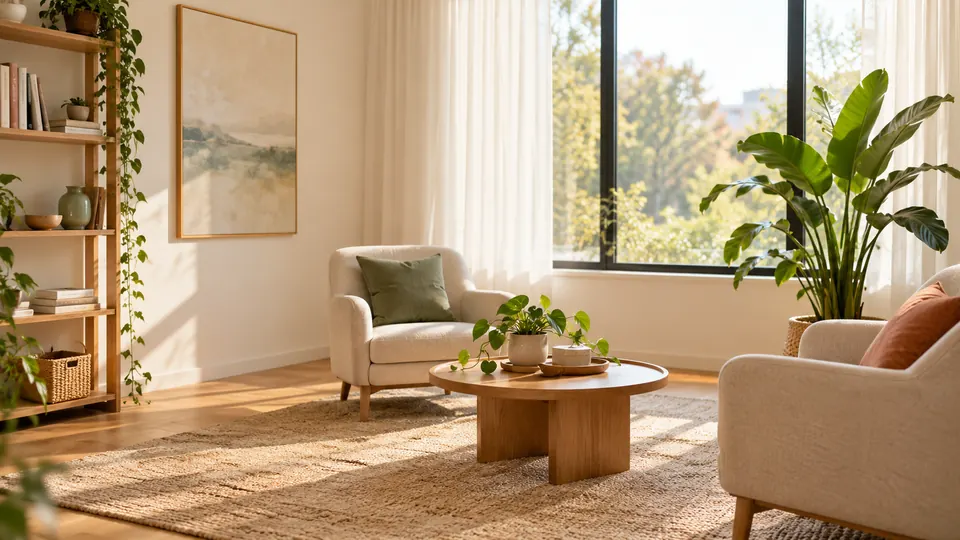
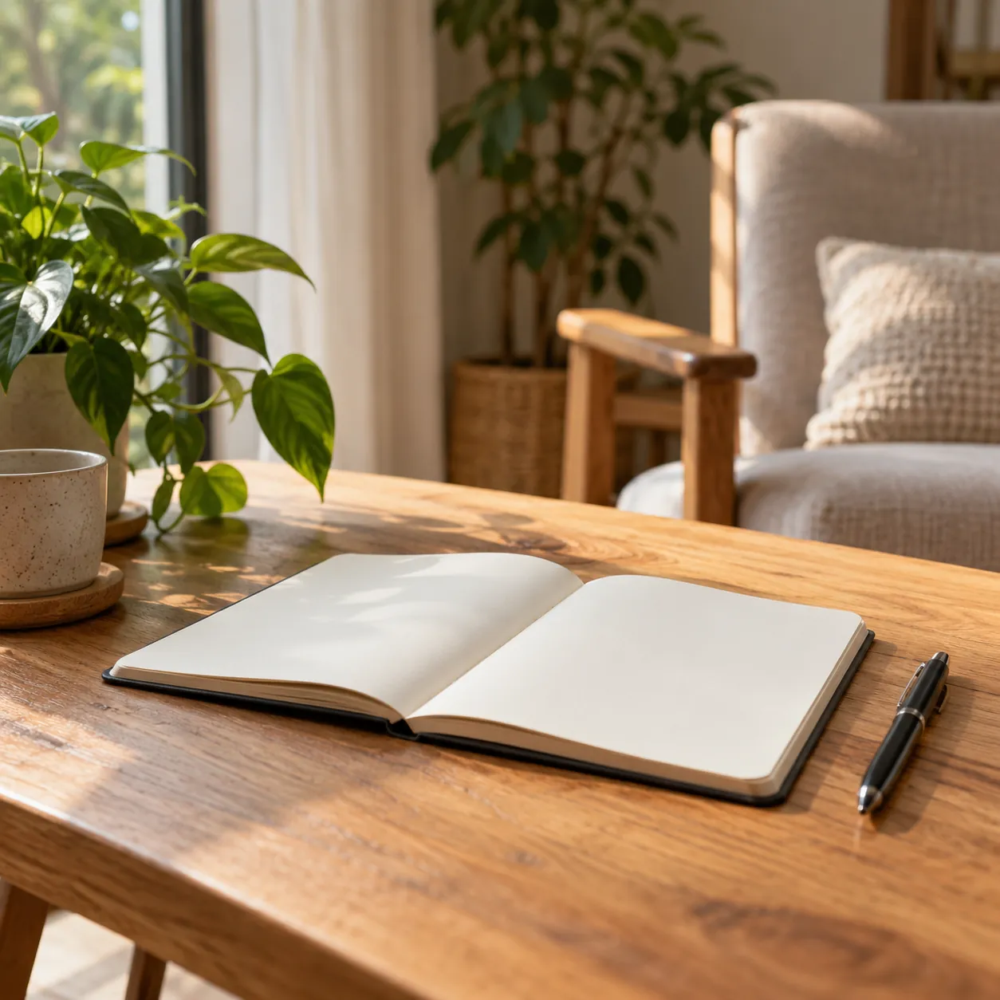
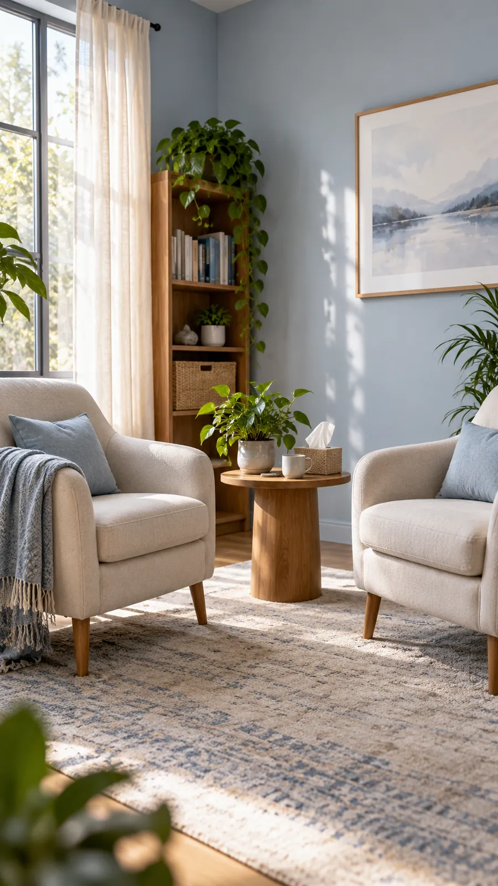

01
Consultas presenciales
En el consultorio, un lugar cálido y reservado para hablar cara a cara, con calma y sin apuro.
Pedir turno presencialCounseling · Presencial y online
Escucha, respeto y empatía para entender lo que te pasa y reencontrarte con tus propios recursos, a tu tiempo.

En el consultorio, un lugar cálido y reservado para hablar cara a cara, con calma y sin apuro.
Pedir turno presencialPor videollamada, desde donde estés. Solo necesitás conexión y un rincón tranquilo para hablar.
Pedir turno online
Quién te acompaña
Soy Victoria Marfetán, counselor y consultora psicológica. Acompaño desde la escucha, el respeto, la aceptación y la empatía: cada persona llega con su historia y sus tiempos, y el espacio se arma a partir de eso.
No hace falta tener todo claro para consultar. Muchas veces el primer paso es animarse a ponerlo en palabras.
Victoria Marfetán · Counselor
Un espacio para expresarte sin juicios, comprender lo que te pasa y reencontrarte con tus propios recursos, respetando tu historia y tus tiempos.
Conversaciones que cuestan, vínculos que se tensan y cambios en la dinámica de la familia.
Conocerte más, poner en palabras lo que sentís y construir relaciones que te hagan bien.
Pérdidas, separaciones, cambios de etapa y todo lo que se mueve al crecer.
¿Lo que te pasa no está en la lista? Escribime igual y lo charlamos. Escribime por WhatsApp
El espacio
Luz natural, plantas y un lugar reservado. Tocá una foto para verla en grande. · Fotos ilustrativas
Turnos y contacto
Elegí cómo preferís el encuentro y se arma el mensaje, listo para enviar por WhatsApp.
Contame si preferís presencial u online y qué días u horarios te quedan mejor.
Acordamos día y horario. Si es online, te paso el enlace de la videollamada.
Contás lo que te trae, sin apuro y sin juicios. Después definimos cómo seguir.
Consultorio en Buenos Aires, dirección a confirmar. Las consultas online son desde donde estés.
Si estás pasando por una urgencia, no esperes un turno: llamá al 135 (gratuito desde CABA y GBA) o al 107.
Es un espacio de escucha y acompañamiento para atravesar momentos difíciles, entender lo que te pasa y encontrar tus propios recursos para seguir adelante.
El encuentro es el mismo; cambia el lugar. Para la online necesitás conexión estable y un espacio donde puedas hablar con tranquilidad.
Sí. Todo lo que compartís en las consultas queda entre vos y yo.
No. Muchas veces se llega con algo difícil de nombrar, y ponerlo en palabras ya es parte del camino.
Escribime y coordinamos tu primera consulta, presencial u online.

1 / 1